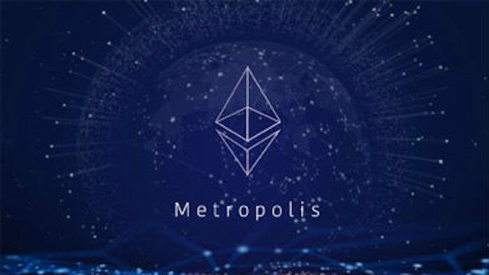
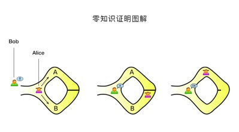

什么是以太坊大都会：终极指南
作为以太坊的里程碑事件，大都会终于要来到我们身边了。以太坊开发团队计划于9月18日在测试网络上测试"大都会"（Metropolis），测试至少3周时间。如果测试正常，"大都会"将被部署在主网络。所以，升级到"大都会"阶段的最早时间是10月9日（译者注：实际部署时间已经推迟）。所以，问题来了:
• 什么是"大都会"？
• "大都会"会给以太网络带来什么新的特性？
• "大都会"后会分叉产生新的 Ethereum？
• 以太币的价格会上涨吗？
这些问题在本指南都可以找到答案。
（一）何谓“大都会”之以太坊的四大阶段
这不是以太坊第一次升级，也不会是最后一次。以太坊不仅仅被设计为一种货币模式，更是一个去中心化的应用平台。在最终达到这个目标之前，它需要经历不同的增长阶段，在每一个阶段，以太坊都会引入不同的特性来使得系统变得更加稳定和强大。 以太坊的完整发展路线分为四个阶段，即"前沿"（Frontier）、"家园"（Homestead）、"大都会"（Metropolis）和"宁静"（Serenity）。"大都会"是以太坊发展的四个阶段里面的第三个，随着它的到来，以太坊将会增加许多有趣的特性，下面介绍一些会对以太坊造成重大影响的特性，即：
• zk-Snarks
• PoS（Proof of Stake , 即权益证明）早期实施
• 智能合约的灵活性和稳定性
• 抽象账户
（二）"大都会"之四大特性
特性1：zk-Snarks
"大都会"最大和最重要的特性就是执行 zk-Snarks，zk-Snarks 全称 Zero-Knowledge Succinct Non-Interactive Argument of Knowledge，即"简明非交互零知识证明"。zk-Snarks基于"零知识证明"（zero knowledge proof，即ZKP）。
何谓"零知识证明"？
"零知识证明"是由 S.Goldwasser、S.Micali 及 C.Rackoff 在 20 世纪 80 年代初提出的。它指的是证明者能够在不向验证者提供任何有用的信息的情况下，使验证者相信某个论断是正确的。"零知识证明"实质上是一种涉及两方或更多方的协议，即两方或更多方完成一项任务所需采取的一系列步骤。证明者向验证者证明并使其相信自己知道或拥有某一消息，但证明过程不能向验证者泄漏任何关于被证明消息的信息。大量事实证明，"零知识证明"在密码学中非常有用。如果能够将"零知识证明"用于验证，将可以有效解决许多问题。 "零知识证明"能够成立必须具备以下三个要素：
• 完整性：如果声明为真，那么一个诚实的验证者可以被诚实的证明者相信；
• 可靠性：如果声明为假，不排除有一定概率欺骗者可以说服诚实的验证者它是真的；
• 零知识：如果声明为真，那么验证者在证明过程中并不知道任何关于声明的消息；
"零知识证明"并不是数学意义上的证明，因为它存在小概率的误差，欺骗者有可能通过虚假陈述骗过证明者。换句话来说，"零知识证明"是概率证明而不是确定性证明。但是也存在有技术能将误差降低到可以忽略的值。 零知识的形式定义必须使用一些计算模型，最常见的是图灵机的计算模型。
下面举两个例子说明零知识证明：
1）假设有一个房间只能用钥匙打开锁，其他任何方法都打不开。Alice 要向 Bob 证明自己拥有这个房间的钥匙，这时有2个方法： ① Alice 把钥匙出示给 Bob，Bob 用这把钥匙打开该房间的锁，从而证明 Alice 拥有该房间的正确的钥匙。 ② Bob 确定该房间内有某一物体，Alice 用自己拥有的钥匙打开该房间的门，然后把物体拿出来出示给 Bob，从而证明自己确实拥有该房间的钥匙。后面的 ② 方法属于零知识证明。好处在于在整个证明的过程中，Bob 始终不能看到钥匙的样子，从而避免了钥匙的泄露。
2）这是一个很经典的例子：有一个缺口的环形长廊 ，出口和入口距离非常近（在目距之内），但走廊中间某处有一道只能用钥匙打开的门，Alice 要向 Bob 证明自己拥有该门的钥匙。采用零知识证明，则 Bob 看着 Alice 从入口进入走廊，然后又从出口走出走廊，这时Bob没有得到任何关于这个钥匙的信息，但是完全可以证明Alice拥有钥匙。
上面这两个例子都是零知识证明在现实世界的"运作"，那么我们如何通过 ZK-Snarks 实现零知识证明在区块链中的应用呢？
zk-Snarks如何工作？
zk-Snarks由3种算法组成：G、P、V。
G是一个密钥生成器，需要通过生成随机变量 L（必须保证任何情况下不能泄露）和程序C。然后生成两个公钥——证明公钥 Pk 和验证公钥 Vk ,这两个公钥都是公开的，任何人都可以查看。
P是证明者，需要输入三个参数，即证明公钥 Pk、公开的随机输入散列值 x 以及需要证明的隐私声明 w 。P 算法生成证明 prf ,函数表达为：prf = P ( Pk , x , w )
V 作为验证者将会返回一个布尔类型的结果，即 true 或者 false 。V 将验证公钥 Vk 、P 中的随机输入散列值 x 以及证明 prf 作为输入参数进行验证，即V （Vk , x , prf）。如果证明者正确，返回 true ，否则返回 false 。
由以上G、P、V三者的关系可以看出，随机变量 L 至关重要，必须保密。因为任何人都可以用它来生成假的证明，这些假的证明也能返回 true ，而不管证明者是否拥有隐私声明 w 的知识。 下面让我们继续回到我们的老朋友 Alice 和 Bob 的身上，Alice 是证明者，Bob 是验证者。
Bob 作为验证者第一件事就是要使用 G 生成证明公钥 Pk 和验证公钥 Vk ，为此他需要生成随机变量 L，正如上面提到的，Bob对 L 必须非常小心，他不能让 Alice 知道 L 的价值以防 Alice制造假的证明。
既然Bob生成了两个公钥，Alice 需要生成证明 prf 来证明声明的有效性。她将使用证明算法P生成证明，来证明她知道隐私声明 w 的哈希值为 x 。接下来 Alice 将把这些证明参数交给最终运行ZK-Snarks验证算法的 Bob 。Bob 将会使用验证算法 V （Vk , x , prf）来验证结果，如果返回 true ，则 Alice 很真诚，确实知道隐私声明 w 是什么。如果返回 false ，则 Alice 在说谎她知道 w 是什么。
以太坊 & zk-Snarks
以太坊和 Zcash （Zero Cash，完全基于 zk-Snarks 的一种加密货币）正在紧密合作，如果你问我把 zk-Snarks 和区块链结合最紧密的是谁，那毫无疑问是 Zcash 。就个人而言，我已经迫不及待的想看到大都会和 zk-Snarks 的结合了。
特性2：PoS（Proof of Stake,即权益证明）早期实施
这一部分我们将会详细阐述吵得沸沸扬扬的 PoS 协议，并和 PoW （Proof of Work，工作量证明）作比较。
PoS vs PoW
PoW：包括 ETH 和 BTC 在内的绝大多数主流加密货币采用的就是这种协议，PoW 需要矿工（或者节点）不断消耗算力进行哈希计算，以找到期望的随机数，这就意味着系统需要消耗大量的算力和电力。
PoS：在这个系统里，我们有验证者而不是矿工，它的原理是，作为验证节点，首先你必须拥有一定数量的以太币，根据以太币的数量和时间会产生用于下注验证区块的权益。只有拥有权益的节点才能有效验证区块，当你验证的区块被打包进链，你将获得和你权益成正比的区块奖励。如果你验证恶意或错误的区块，那么你所下注的权益将被扣除。
为了实施 PoS，以太坊将采用 Casper 的共识算法，一开始，它将是一个 PoW 和 PoS 共存的系统，区块的绝大多数交易还是采用 PoW 协议，每100个区块有一个采用 PoS 协议挖出，这样做的目的就是为在以太坊平台上创建了一个真实的测试环境，但是这种协议究竟能给以太坊带来什么好处呢？让我们慢慢道来：
• 降低系统的整体能源成本：全世界的比特币矿工每小时耗资约5万美元，一年耗资约4.5亿美元！通过使用 PoS 协议，你可以将整个过程虚拟化，大幅减少成本；
• 无 ASIC 优势：由于整个过程是虚拟的，它将不再依赖谁有更好的设备或者 ASICs 。
• 51%攻击变得更困难：PoW 协议存在算力集中问题，51%攻击风险很大，PoS 则让这一攻击变得更加困难；
• 无恶意验证者：任何验证者都需要将其权益锁定在区块链中，将确保他们不会向链中添加任何恶意或错误的块，因为这意味着所有权益将被扣除；
• 创建区块：出块和整个进程都会更快（后面会详细介绍）；
• 可拓展性：通过引入“分片”概念，让区块链变得可拓展；
虽然之前有过各种各样的简单的 PoS 协议部署过，但是真正让 Casper 共识算法从中脱颖而出的是它能激励诚实的矿工并且惩罚不诚实的矿工，如果你试图去验证恶意的区块，那不好意思，你所有的权益将被扣除，它会狠狠地惩罚任何不遵守游戏规则的人。
Vitalik 是这样解释的：
想象现在有 100 个人围着圆桌，其中有一个人拿着很多张纸，每张纸记录着很多笔历史交易信息。第一个人拿起笔签完后递给第二个人，第二个人也做出了相同的选择，如果大多数人做出了相同的选择，即都签署了同一张纸那么每一个参与者会获得1美元，当你做出和绝大多数人不同的选择时，那么你的房子就会着火！
然后他补充道，这可能是一个比较正确的激励措施去保证大家都能签署正确的纸张！那么：
• 什么是时间 "难度炸弹"？
• 如何激励矿工从 PoW 转向 PoS？
矿工花费了大量的金钱购买设备用于挖矿，然而随着 PoS 的到来，大量的设备变得一文不值；想象一下，花费大量金钱搭建的超级复杂的矿池突然变得毫无用处！
如果真的不能阻止矿工停留在 PoW 上继续挖矿，那将会创建三种以太坊币：ETC、ETH-PoW、ETH-PoS，这对以太坊绝对是个噩梦！因为那不仅会降低以太坊的可信度和经济价值，还会稀释整个系统的哈希值比例，使得它更容易被黑客攻击！
为了确保以太坊的矿工能加入到新链条中来，开发团队引入了"难度炸弹"机制。"难度炸弹" 是在2015年9月7日推出的，想要了解"难度炸弹"是如何工作的，首先我们需要了解什么是 "难度" 和挖矿。
什么是 "难度" 以及它是如何工作的？
"难度" 这一概念起源于比特币，比特币在最初的时候，由于挖矿的人比较少，挖矿显得比较简单，任何人只要使用他们的电脑都可以从事挖矿活动。随着比特币越来越受欢迎，矿工的数量也越来越多，为了防止过早的把所有的比特币都挖完，中本聪在比特币中一开始就引入了难度系统。
难度系统的工作原理大致如下：矿工们使用他们的电脑算力进行解密，解密的过程就是随机地往已经进行过哈希运算的区块上添加一个随机字符串（也叫随机数），然后对整个字符串再进行一次哈希运算。如果结果数小于某个特定的数值，则认为解密正确，并且会将这个新的区块添加到链上。然而找到这个随机数通常是及其困难和随机的，这正是挖矿的核心所在。
这一过程也可以简明扼要的总结如下：
• 获取新块内容的哈希值
• 将随机字符串添加到区块上
• 对新的字符串再次哈希运算
• 然后将最终的哈希与难度系数进行比较，是否小于等于难度系数。
• 如果不是，则改变随机数重新进行运算
• 如果是，则将新的区块添加到链上并对全网进行广播
• 相应的矿工将获得新区块的奖励
比特币的难度每 2016 个区块调整一次，难度系数与出块的速度成正比，比特币每 10 分钟产生一个新的区块。如果出块时间低于 10 分钟，则难度系数增加；否则难度系数减少，比特币就是通过调整难度系数来保证出块的时间能始终保持在10分钟左右。
以上就是比特币挖矿的工作机制，以太坊也采用了相同的协议。
那么以太坊的"难度炸弹"又将如何呢？
难度炸弹将会使难度系数呈指数增加以至于让挖矿变得几乎不可能。就像我们之前说的，难度系数会根据出块的速度进行调整，以太坊的难度调整算法如下：
block_diff = parent_diff + parent_diff // 2048 * max(1 – (block_timestamp – parent_timestamp) // 10, -99) + int(2**((block.number // 100000) – 2)) (In here “//” is the division operator such that 6//2 = 3 and 9//2 = 4.)
下面让我们用更直白的方式来讲清楚上面两行代码的意思：
block_timestamp： 最新一个区块出块时刻；
parent_timestamp：上一个区块出块时刻；
• 如果 (block_timestamp - parent_timestamp) < 10秒，那么难度系数会增加parent_diff // 2048 * 1
• 如果(block_timestamp - parent_timestamp）在10-19秒之间，则难度系数保持不变。
• 如果 (block_timestamp - parent_timestamp）> 20 秒，则将parent_diff // 2048 * -1的难度降低到最大值parent_diff // 2048 * -99。
这就是以太坊在"家园"（Homestead）阶段的难度调整算法，它最终的结果就是使出块时间始终稳定在15秒。而"难度炸弹"在于它会使难度系数呈指数增加，从而出块的时间也会显著增加，直到最后几乎挖不出区块，我们把这一状态称为“以太坊冰河期”（Ethereum Ice Age），到那时，矿工除了转向新的PoS协议将别无选择。
难度炸弹会在“大都会”时期引爆吗？
难度炸弹原本计划在2017年年底引爆，现在看来似乎比原计划推迟了一年半，然而，随着大都会的到来，开发团队将通过其它两个措施使其平稳过渡到 PoS。即：
• 部署之前提到的 Casper 算法，每 100 个区块将有一个采用 PoS 协议挖出
• 每个区块的奖励由之前的 5 个 ETH 减少为3个
所有的这些措施都是为了在以太坊的最后一个阶段"宁静"（Serenity）到来之前所有的节点都能部署好 PoS 协议并且消除之前遇到的问题。
特性3：智能合约的灵活性和稳定性
可以毫不夸张地说，智能合约就是以太坊的命脉。 智能合约是如何在以太坊中被执行的呢？可以用一个简单的例子来说明，假设 Alice 和 Bob 在没有任何第三方干预的情况下完成某个交易或功能，Alice 要 Bob 完成一个任务，Bob 收取一个 ETH ，Alice 将一个 ETH 放在盒子里，如果Bob 执行任务，那么盒子里的 1 个 ETH 会自动到 Bob 的账户，否则，那 1 个 ETH 自动返回到Alice的账户。在这个例子中，盒子就像智能合约，虽然这个例子比较粗略，但它仍然能帮你了解智能合约是如何工作的。 那么以太坊给智能合约带来了什么创新能使它变得更好呢？
智能合约如何在以太坊中发挥作用？
假设 Alice 让 Bob 执行一个智能合约，该合约中的每个功能需要 Bob 使用某些计算能力。这种计算能力被称为 gas ,支付这种算力的钱叫做 ETH 。通常比特币中为所有的交易支付相同的费用，但以太坊能为每个智能合约设置所花费的算力(即 gas )。每个智能合约都有自己 gas 的限制值，这个限制值由合约创建者设置，显然，这会导致两种情况发生：
• 所需要的 gas 大于限制值：如果是这种情况，合约执行状态将会回滚到之前的状态，同时 gas 将会全部消耗掉。
• 所需要的 gas 小于限制值：如果是这种情况，合约成功执行，同时剩余 gas 将会返回给合约创建者。
如果有人想在合约执行期间返回到较早的状态，需要手动触发异常。例如，如果有人想阻止某笔交，那么他为此不得不付出双倍代价。为了将合约回滚到之前的状态，开发人员可以使用 "throw" 功能，虽然 "throw" 功能确实有助于合约状态回滚，但同时也会耗尽合约中所有的 gas 。 为了解决这个问题，"大都会" 正在加强 "revert" 功能，它能使合约恢复到之前的状态而不用耗光所有的 gas ，合约中未使用的 gas 将会退还给合约创建者。伴随着 "revert" 功能，"大都会" 正在通过引入 "returndata" 指令让合约能恢复到一个任意可变大小 gas 的状态。
特性4：抽象账户
在我们正式了解什么是抽象账户之前，让我们首先来了解一下什么是"抽象"。"抽象"的意思是任何人都可以使用某个系统或者协议而不必完全了解它内部或外部的技术细节。例如当你使用你的 iPhone 时，你不需要是一名程序员或者工程师，你只需要按压或者滑动屏幕就能使用 APP 或者打电话。你也不需要知道这些 APP 是如何激活 iPhone 内部的电路的。总而言之，"抽象"能够极大降低普通民众使用复杂技术的门槛。正因为如此，"抽象"才成为以太坊未来要实现的一部分，想象一下，在一个去中心化的未来，每一个人都在使用 DApps,他们甚至察觉不到这些 DApps 是基于以太坊的，"大都会" 正在通过引入 "抽象账户" 向实现这一宏伟目标迈出了重要的一步。
众所周知，现在的以太坊有两类账户，即外部账户和合约账户。外部账户由私钥控制，合约账户由创建者编写的代码控制。以太坊正在试图模糊二者的界限，即你可以同时拥有合约账户和外部账户，这种做法本质上就是让用户按照合约账户的格式来定义外部账户。一旦这样做，代码支持密钥将用户特殊的标识加入到交易中，可是这又有什么用呢？因为你可能会说随着量子计算机的发展，它会让加密货币变得不那么安全，假设你想保存一笔被量子计算机攻击过的交易，那又该怎么办呢？随着"抽象账户"的实施，你可以使用签名机制就像哈希梯子一样来定义你的账户，这样你的账户就会具备量子级别的安全性，同时你的账户也会完全变成可定制化, 就像智能合约一样。
（三）"大都会"之番外篇
什么是"拜占庭"和"君士坦丁堡"？
熟悉以太坊的朋友对"拜占庭"和"君士坦丁堡"应该都不会陌生，那么这两个术语究竟是什么意思呢？"大都会"为以太坊带来了大量重要的特性，不可能一次性引入这么多特性，毕竟开发人员精力也有限，这就是为什么以太坊要通过两个阶段发布"大都会"并且这两个阶段都会硬分叉，而这两个阶段就是"拜占庭"和"君士坦丁堡"。 经过几次推迟以后，"拜占庭"将在第4370000区块左右硬分叉。 "拜占庭"将会引入大量新特性，主要包括前面讲的：
• zk-Snarks
• "revert"功能和"returndata"指令
• 抽象账户
"君士坦丁堡"具体什么时候部署还不太清楚，但是应该会在 2018 年部署。它主要的特性就是平滑处理掉所有由于"拜占庭"所引发的问题，并引入 PoW 和 PoS 的混合链模式。
以太坊将会再次硬分叉？会产生第三种以太币吗？
由于之前发生的 ETH-ETC、BTC-BCC 硬分叉，人们开始想当然的认为所有的硬分叉都必然会导致链条分裂，事实上根本不是这样。 之前硬分叉导致链条分裂的主要原因是提出的修改方案在社区有很大的争议，不是所有人都同意。然而，"大都会"的这次升级已经在社区一致同意过了，大家都知道这终将到来，这次硬分叉是升级的结果，不是紧急情况下的临时处理办法。这就是为什么不会有任何社区分裂，不会有新的以太币。可能存在的争论焦点就是 PoS 的实施，当然，争论也没用，矿工不会因为留在旧链上而获得更多的收益，相反，就像前面所说的那样，"难度炸弹"的引爆将会使挖矿变得几乎不太可能。
以太坊"大都会"结论：现在正在发生什么？
那么以太币的价格会上涨吗？我们不知道，我们不是投资顾问，投资任何一个虚拟货币之前，你都需要自己去做一定的研究。拜占庭给以太坊带来如此多的改变，很兴奋它最终会变成怎样。zk-Snarks 的执行也是一项勇敢的改变。当然，"君士坦丁堡"和它的 PoS 将会成为密码世界里每个人都会关注的事情。即将到来的一年在以太坊去中心化的道路上绝对是革命性的！
转载链接: https://token.im/posts/92?locale=zhCN&from=groupmessage&isappinstalled=0
翻译：郭辉